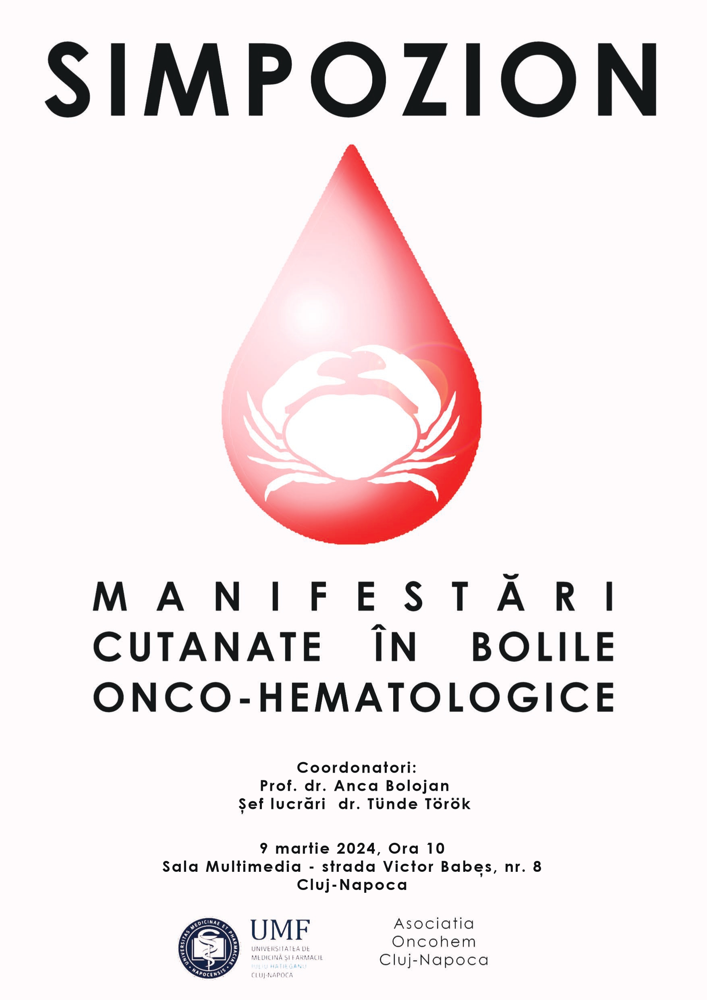

Acasă
Despre noi
ASOCIAȚIA ONCOHEM CLUJ-NAPOCA a fost înființată de către medici hematologi si oncologi în 2023, cu principalul scop de a facilita educația medicală continuă în rândul medicilor hematologi si oncologi, promovând în același timp și importanța abordării multidisciplinare a bolilor onco-hematologice. Astfel, ne-am propus să organizăm manifestări științifice cu participare multidisciplinară, facilitând colaborarea dintre medicii implicați în diagnosticarea și tratarea pacienților cu boli hematologice și oncologice. Deasemenea, fiind o organizație non-profit, ne-am propus să oferim consultație virtuală gratuită celor care doresc o opinie de specialitate sau a doua părere.
Membri fondatori
Dr. Anca Simona Bojan, medic primar hematolog în cadrul IOCN și profesor unversitar la Catedra de Hematologie al UMF Cluj
Dr. Török-Vistai Tünde, medic primar hematolog în cadrul IOCN și sef lucrări la Catedra de Hematologie al UMF Cluj
Dr. Anca Vasilache, medic primar hematolog în cadrul IOCN
Dr. Ramona Matei, medic primar oncolog la Spitalul Clinic Municipal Cluj-Napoca
Dr. Dinu Bolunduț, medic rezident oncologie în cadrul IOCN
Noutăți

Simpozion
9 martie 2024, ora 10